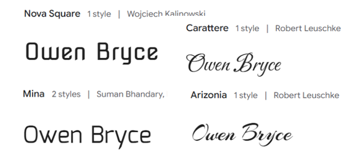
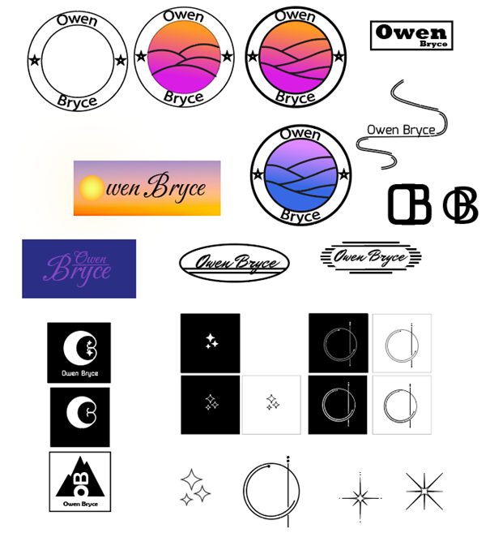

Branding
Branding Owen Bryce
Voor mijn branding project had ik de keuze uit twee verschillende opdrachtgevers: Salve Mundi, de studievereniging van Fontys ICT, of Owen Bryce, een student van de Rock Academy in Tilburg. We hebben even nagedacht over beide opties, maar uiteindelijk besloten om voor Owen Bryce te gaan.
Owen is bijna klaar met zijn opleiding en wil een sterke branding voor zichzelf binnen het muziekgenre folk/indie-pop. Hij heeft behoefte aan verschillende elementen, zoals een logo, website, cover art, contentstrategie en brand guide. Om zijn branding een duidelijke richting te geven, gaf hij ons een aantal kernwoorden mee: freedom, optimistic, dreamy. Vanuit deze kernwaarden zijn we aan de slag gegaan en hebben we gezocht naar passende visuele en strategische oplossingen.
Fonts
Voor het kiezen van een font hebben we allemaal een aantal lettertypes uitgezocht en deze vervolgens samengebracht om te bespreken welke het beste bij de branding past. We hebben gekeken naar leesbaarheid, stijl en hoe goed het font aansloot bij de kernwoorden freedom, optimistic, dreamy. Hieronder staan een paar fonts die ik zelf heb uitgezocht.
Logo's
Hieronder staan alle logo-ideeën die ik aan het begin heb bedacht. In eerste instantie was ik erg gefocust op kleur en gradiënten, maar nadat we enkele ontwerpen naar Owen hadden gestuurd, kwamen we erachter dat hij liever iets in de richting van fine line wilde. Hij wilde geen traditioneel logo, maar een simpel symbool dat bij zijn stijl past.
Met die feedback zijn we opnieuw aan de slag gegaan en heb ik een paar nieuwe designs gemaakt. De ontwerpen die in het groene vak stonden, hebben we naar Owen doorgestuurd. Zelf vond ik de middelste van de drie het beste passen, maar Owen voelde zich het meest aangetrokken tot de ster. Uiteindelijk is het ontwerp dus in die richting uitgewerkt.

Color palet
Bij het kleurenpalet hebben we een vergelijkbare aanpak gevolgd als bij de fonts. We hebben allemaal een kleurenpalet samengesteld en deze vervolgens naar Owen gestuurd. Hij heeft ze bekeken en gekozen welke het beste bij zijn branding past. Uiteindelijk vond hij het onderste palet het meest geschikt, omdat het het beste aansloot bij de dreamy vibe die hij graag wilde uitstralen.
Eindresultaat
Op de laatste dag van het project moesten we naar de school van Owen Bryce, de Rock Academy in Tilburg. Hier gaven we een presentatie aan de opdrachtgever en de rest van de groepen uit klas 2 en 3. Klas 3 had een andere opdrachtgever, dus ik kon ook zien wat zij in hun project hadden gedaan. Ik vond dat wij een goede en duidelijke presentatie hebben gegeven. We hielden het simpel, maar deelden alle informatie die we in de afgelopen vier weken hebben verzameld en uitgewerkt. Het was interessant om te zien hoe de andere groepen hun projecten presenteerden en om te horen wat zij hadden gemaakt.